Inizialmente Id Software voleva creare un gioco basato sul film "Alien", la software house cominciò anche a contrattare con la Twenty Century Fox per le licenze, ma l'idea fu abbandonata per lasciare più spazio alla creatività degli sviluppatori. Il concept finale di DOOM trae ispirazione da Alien ma anche da altri famosi prodotti Holliwoodiani; la motosega e il fucile a pompa sono citazioni alla saga di "Evil Dead" da noi conosciuta come "La Casa". Il nome DOOM viene da una battuta del film "Il Colore Dei Soldi" dove Tom Cruise si presenta ad una partita di biliardo con una stecca personalizzata in una custodia, quando gli viene chiesto cosa ci sia dentro lui risponde -"Doom".
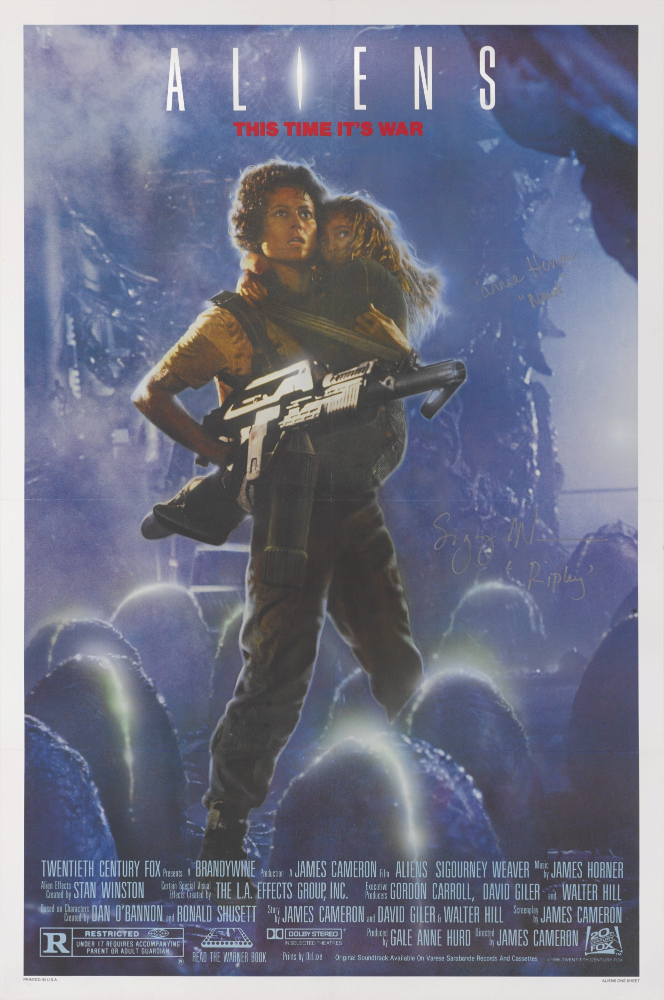 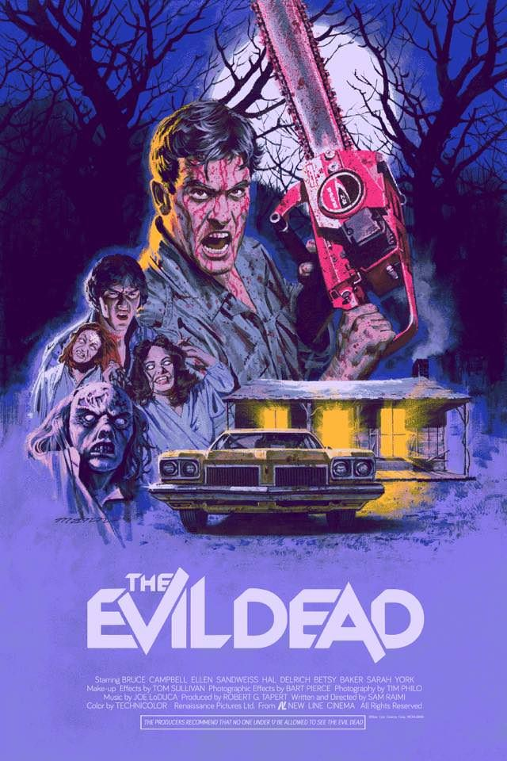L'idea di usare i demoni come nemici venne ad alcuni sviluppatori dopo aver giocato una campagna di Dundeons and Dragons dove alla fine si apre un portale che permise un'invasione demoniaca
Il direttore creativo Tom Hall aveva originariamente creato una trama molto elaborata per il gioco, e scrisse un documento chiamato DOOM Bible contenente il design del gioco. La trama originale avrebbe dovuto aver luogo su un pianeta alieno chiamato Tei Tenga che sarebbe stato invaso da creature provenienti dall'inferno, ci sarebbero inoltre dovuti essere 5 personaggi giocabili caratterizzati da abilità peculiari. La storia comprendeva originariamente l'andare e tornare dall'inferno con la possibile distruzione del pianeta, infine il protagonista sarebbe stato ritenuto responsabile dell'accaduto su Tei Tenga e mandato in prigione. John Carmack (co-fondatore diId Software) non approvo una storia così dettagliata e la DOOM Bible venne per lo più ignorata nella versione finale. Carmack spiegò la sua posizione riguardo la narrazzione nei videogiochi nel 2003 dicendo: "la storia nei videogiochi e come la storia dei film porno. Ci si aspetta che ci sia, ma non è così importante". Alcuni elementi del documento vennero mantenutinella versione finale del gioco, come il laboratorio militare sul pianeta alieno, l'andare e tornare dall'inferno e le versioni modificate di alcune armi e alcuni mostri presentati in origine nella DOOM Bible. Alla fine Tom Hall portò con sè alcuni elementi della DOOM Bible dop aver lasciato Id Software per lavorare con la software house "3D Realms". Lo sparatutto in prima persona "Rise of the Triad" presenta i personaggi originariamente descritti nella DOOM Bible e nel simulatore di volo "Terminal Velocity" si può trovare un pianeta chiamato Tei Tenga
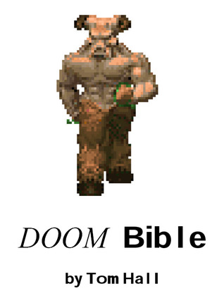 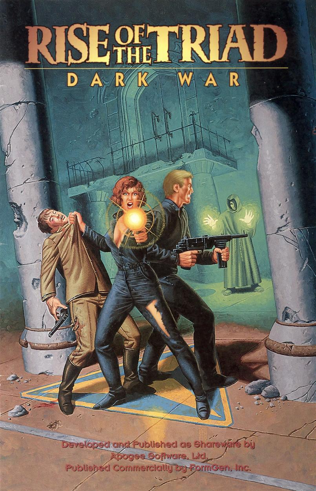 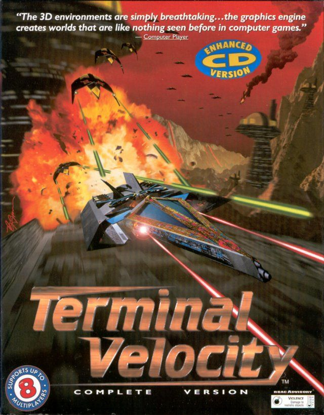Il cacodemon di DOOM è ispirato al classico mostro di Dungeons and Dragons "Beholder", il suo design trae ispirazione da un altro mostro di D&D, il terrore astrale
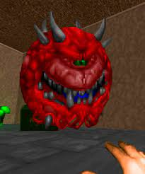 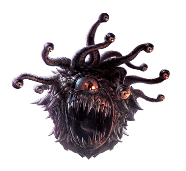 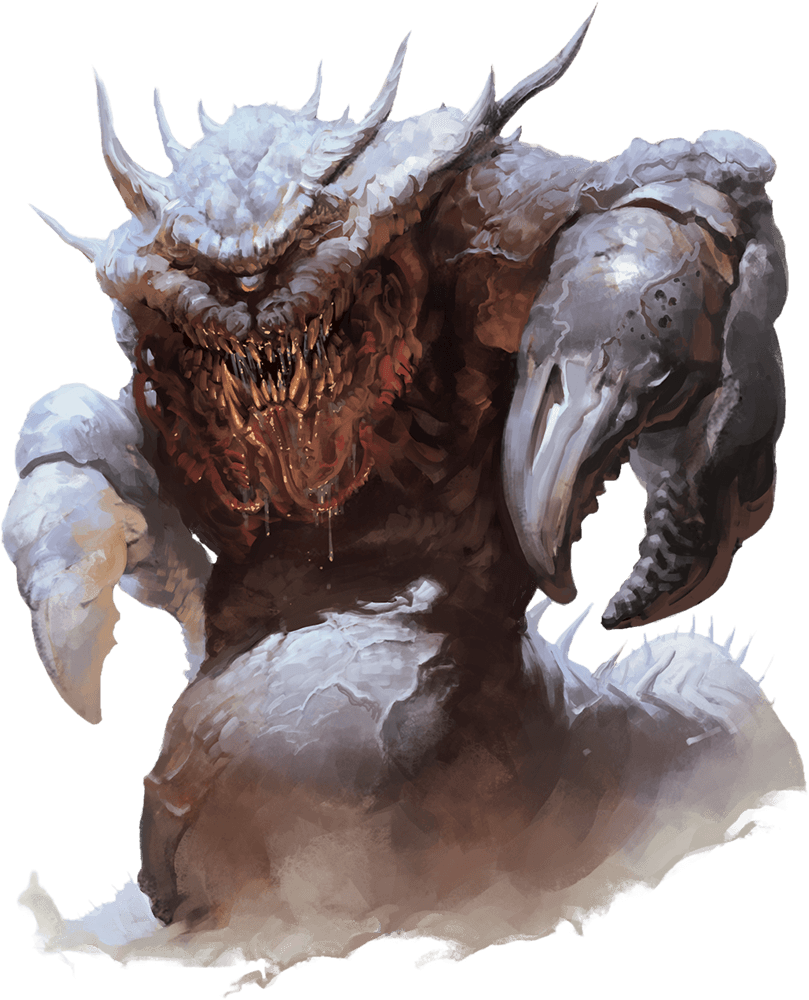La saga di DOOM contiente tantissimi segreti e easter eggs, nelle prime versioni della mappa " command control" il giocatore poteva trovare una stanza con un enorme svastica nazista sul pavimento e sul soffitto, questa doveva essere una citazione a il gioco "Wolfenstein 3D", ma fu rimosso per via di alcune controversie. Wolfenstein venne citato di nuovo in DOOM II con una mappa segreta accessibile dal livello 15 basata sui livelli 1 e 9 di "Escape from Wolfenstein" che presenta come nemici i soldati nazisti del gioco, ma presenta anche un riferimento ad un altro gioco di Id Software: "Commander Keen"
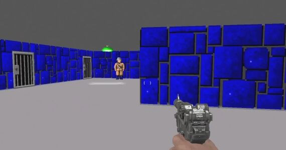 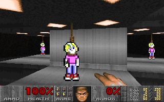Il nome dei livelli e alcune musiche di DOOM hanno origini interessanti, il primo episodio del primo DOOM, "Knee-Deep in the Dead" fu uno dei pochi titoli della DOOM Bible che finirono nel gioco, mentre il quarto e ultimo episodio di Ultimate DOOM chiamato Thy Flesh Consumed prendo il nome da un passaggio della Bibbia di re Giacomo, proverbi 5:11, che cita "and thou mourn at the last, when thy flesh and thy body are consumed". Molti livelli di Thy Flesh Consumed prendono il nome da passi della Bibbia, e il ventunesimo livello di DOOM II si chiama Nirvana e vi si può trovare un fucile a pompa. Questo è probabilmente un riferimento alla band "Nirvana" il cui cantante Curt Cobain si suicidò con un fucile lo stesso anno del lancio di DOOMII. Un altro riferimento a band all'interno del gioco si può trovare nel primo livello di Thy Flesh Consumed, Hell Beneath contiene una stanza segreta con il logo dei "Nine Inch Nails"
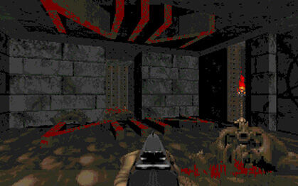 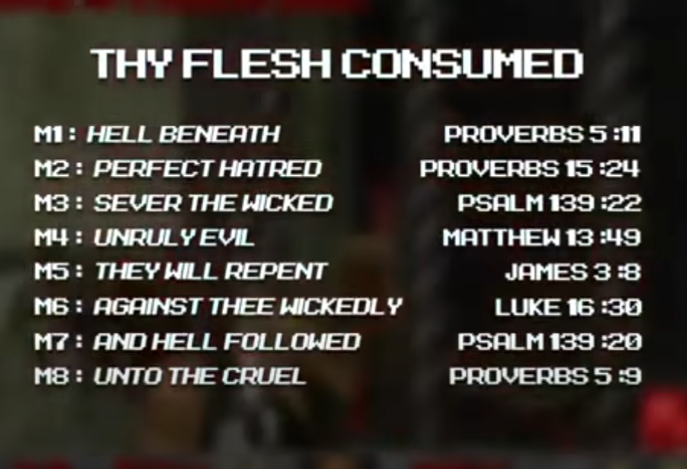La colonna sonora di DOOMII contiene molte tracce influenzate da band rock ed heavy metal. La traccia "Bye Bye American Pie" contiene un sample della canzone "Them Bones" degli Alice in Chains, oppure la traccia "Shawn's got the Shotgun" contiene un giro di batteria di "South of Heaven" degli Slayer. La traccia "Into Sandy's City" presenta una versione più lenta della melodia di apertura di "Sex Type Thing" degli "Stone Temple Pilots". La traccia "The Demon's Dead" usa la melodia di apertura di "After All(The Dead)" dei Black Sabbath
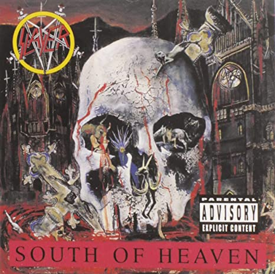 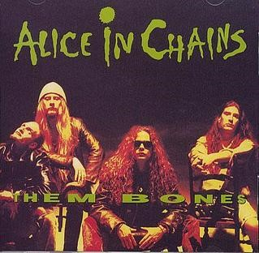 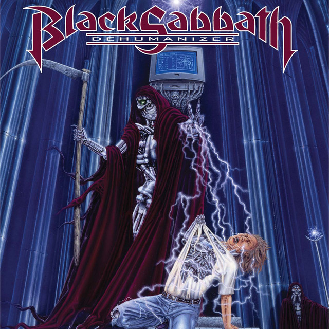Durante lo sviluppo di DOOM III Id Software ha sparpagliato molti riferimenti alla serie, in qualunque momento se il giocatore inserisce un trucco dei vecchi DOOM appare una scritta che recita: "la tua memoria funziona bene!"
All'inizio del gioco si può trovare un cabinato del gioco Super Turbo Turkey Puncher 3; questo finto cabinato contiene grafiche ispirate a quelle del primo capitolo della serie e ad altri giochi di Capcom come Street Fighter Alpha. In giro per la base si possono trovare riviste chiamate Game HOG, che presenta sulla copertina la faccia del DOOM Guy del primo gioco con un'espressione scioccata che si poteva vedere raramente per via di un pug
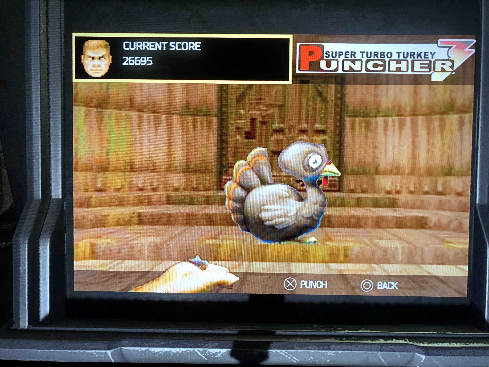 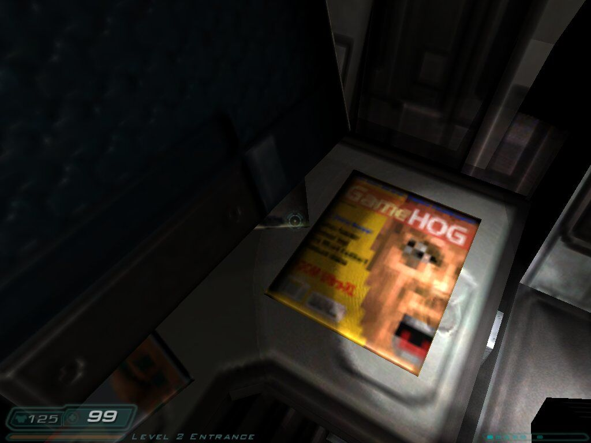